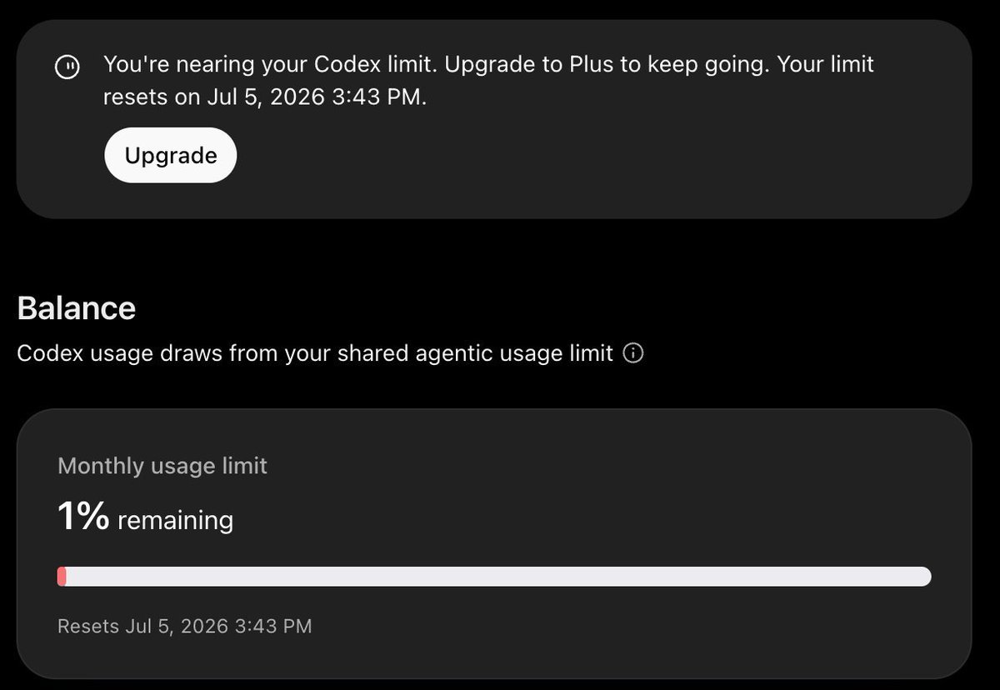
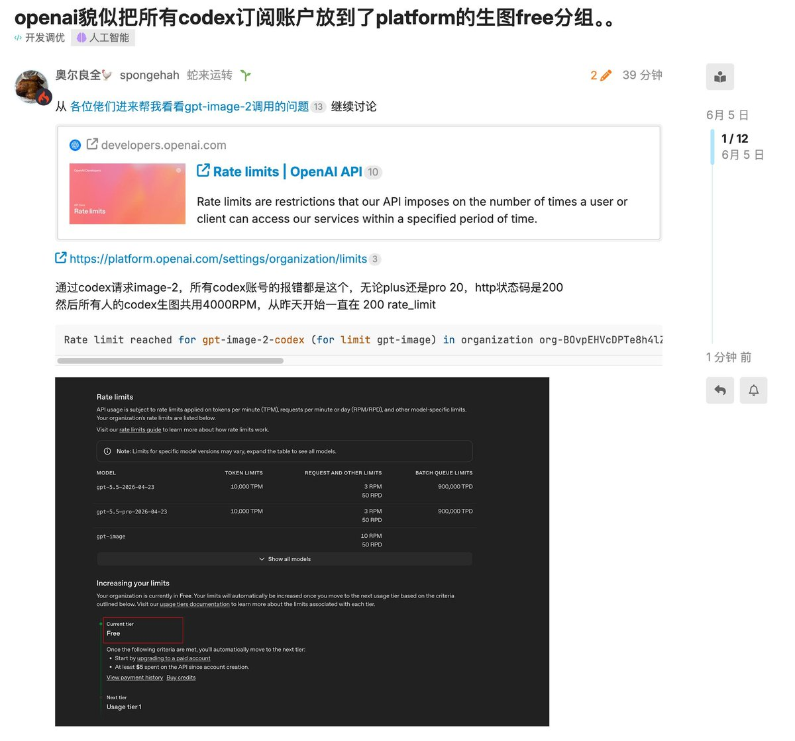
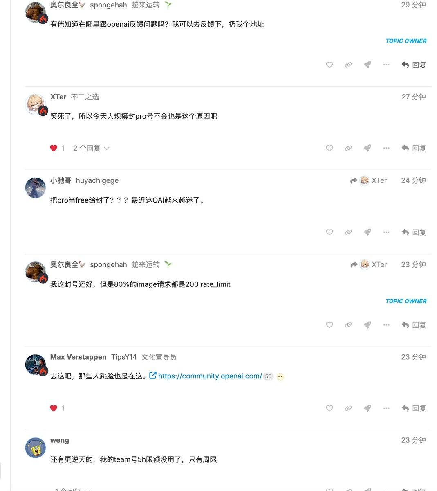

奶昔🥤
@realNyarime
听说OpenAI已经开始在批量解封，账号回来了但Pro掉了，批量封禁的原因竟是把Pro当成Free封了
花100刀订阅ChatGPT Pro，每周都会沉浸在重置的乐趣当中，一定是重置的幻觉！



Vaibhav (VB) Srivastav
@reach_vb
We’re aware of reports that some users may be getting banned, and we’re actively investigating.